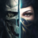

 Dishonored 2
Detalles
 |
|
| Tiempo de juego | No Jugado |
| Última actividad | Nunca |
| Añadido | 11/6/2024 14:41:31 |
| Modificado | 2/5/2025 0:41:53 |
| Estado de finalización | No Jugado |
| Librería | Playnite |
| Fuente | 1 TB EXT |
| Plataforma | PC (Windows) |
| Fecha de lanzamiento | 11/11/2016 |
| Puntuación de la Comunidad | 88 |
| Puntuación de la Crítica | 86 |
| Puntuación de usuario | |
| Género | Acción |
| Desarrollador | Arkane Studios |
| Editor | Bethesda Softworks |
| Característica | Cloud Saves Compat. Parcial Con Mando Cromos De Logros De Préstamo Familiar Remote Play En Tableta Remote Play En TV Un Jugador |
| Enlaces | Punto de encuentro Discusiones Guías Noticias Página de la tienda PCGamingWiki Logros |
| Tag | Acción Ambientales Asesinos Aventura Buena trama Distopías Exploración Gran banda sonora Magia Mundo abierto Parkour Primera persona Protagonista femenina Robos Sangriento Sigilo Simulador inmersivo Sobrenaturales Steampunk Un jugador |
Descripción
Descripción Del Juego
Repite en tu papel de asesino sobrenatural en Dishonored 2.Dishonored 2 ha sido elogiado por IGN como "asombroso" y como "una magnífica secuela", ha sido declarado "obra maestra" por Eurogamer y aclamado como "un cuento de venganza imprescindible entre los mejores de su clase" por Game Informer. Se trata del nuevo capítulo del superventas de acción en primera persona creado por Arkane Studios, Dishonored, ganador de más de 100 premios al "Juego del año".
Juega a tu manera en un mundo en el que misticismo e industria están en conflicto. ¿Decidirás jugar como la emperatriz Emily Kaldwin o como el protector real, Corvo Attano? ¿Avanzarás por el juego sin que te vean, harás uso de su brutal sistema de combate o utilizarás una mezcla de ambos? ¿De qué forma única combinarás los poderes, armas y artilugios de tu personaje para eliminar a tus enemigos? La historia responderá a las elecciones que tomes y te proporcionará resultados fascinantes a medida que juegues cada una de las misiones individualmente diseñadas del juego.
Historia
Dishonored 2 tiene lugar 15 años después de la derrota del lord Regente. La temible peste ha pasado a la historia y un usurpador de otro mundo se ha hecho con el trono de la emperatriz Emily Kaldwin. El futuro de las islas pende de un hilo. Asume el papel de Emily o Corvo, y viaja más allá de las legendarias calles de Dunwall hasta Karnaca, una ciudad costera antaño deslumbrante, que alberga la clave para devolver a Emily al poder. Usa la marca del Forastero, así como nuevas y poderosas habilidades, para dar caza a tus enemigos y recuperar lo que te pertenece por derecho.Características
Los Asesinos
Emily Kaldwin y Corvo Attano, personajes completamente doblados, aportan sus propias perspectivas y respuestas emocionales al mundo y a la historia. Usa el conjunto de poderes, artilugios y armas personalizadas propio de cada personaje de forma creativa para explorar el mundo —ya sea abriéndote paso luchando por las calles de la ciudad o colándote por los tejados— y decides qué enemigos eliminar o perdonar.Poderes Sobrenaturales
La creación avanzada de talismanes de hueso y los nuevos árboles de mejoras te permiten personalizar tus poderes de formas muy diferentes. Conviértete en una sombra viviente y acecha sigilosamente a tus enemigos para que compartan un mismo destino, o hipnotízalos y domina sus mentes. Elige entre una combinación casi infinita de violencia, combate no letal, poderes y armas para cumplir tus objetivos.Mundo Imaginativo
Sumérgete en los espectaculares entornos creados por los excelentes equipos artísticos y narrativos de Arkane, desde las mugrientas calles de Dunwall, infestadas de ratas, a las exuberantes costas de la decadente Karnaca. El mundo es un personaje en sí mismo, con una abundante historia y arquitectura, y unos personajes eclécticos. Está enriquecido con enclaves de misiones peculiares, como la Tolvanera, asolada por tormentas de polvo y facciones en guerra, y la mansión de un lunático con paredes deslizantes, trampas mortales y soldados mecánicos.Void Engine
El nuevo motor Void Engine, creado por id Tech y muy personalizado por Arkane Studios, da vida a Dishonored 2 y supone una revolución en la tecnología de renderizado. Ha sido diseñado para hacer posible una dirección artística del mejor nivel y aprovechar al máximo el potente hardware que ofrece esta generación de consolas, y permite unos avances significativos en todos los sistemas de juego, entre los que se cuentan un sistema de sigilo y de IA de combate que responde a las acciones del jugador, el renderizado gráfico y de iluminación, unos entornos urbanos sorprendentemente densos y una presentación de la historia más rica.